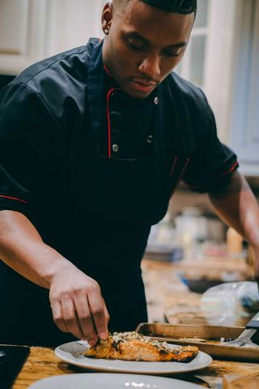
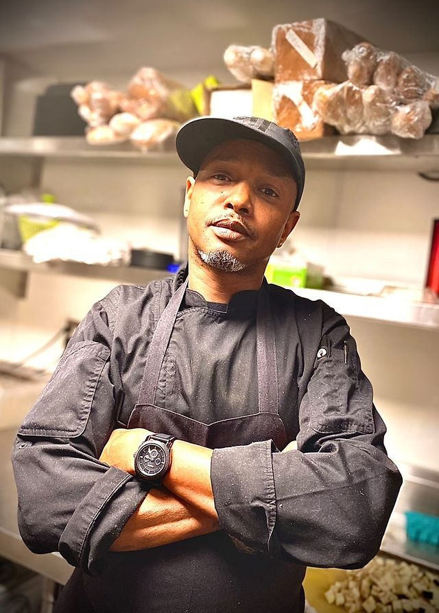
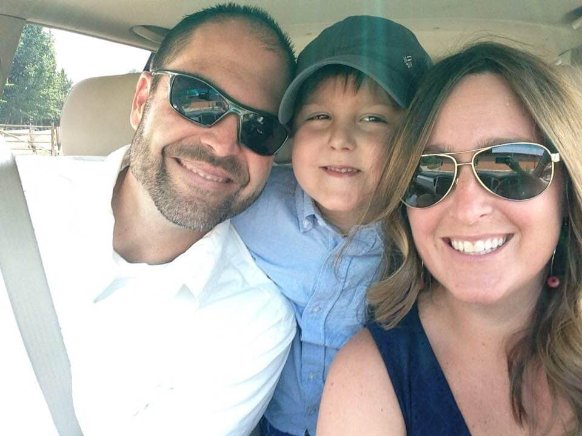
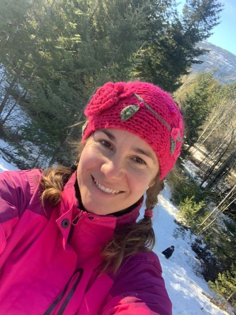
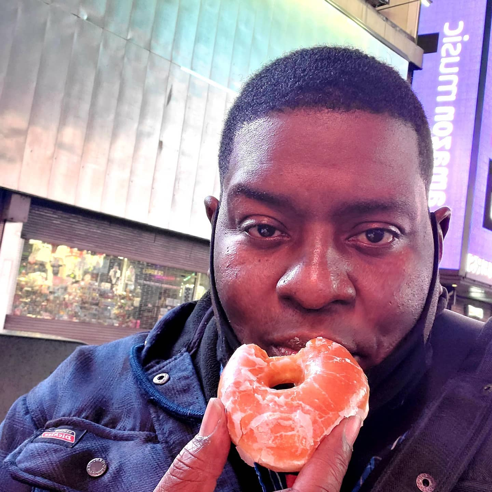
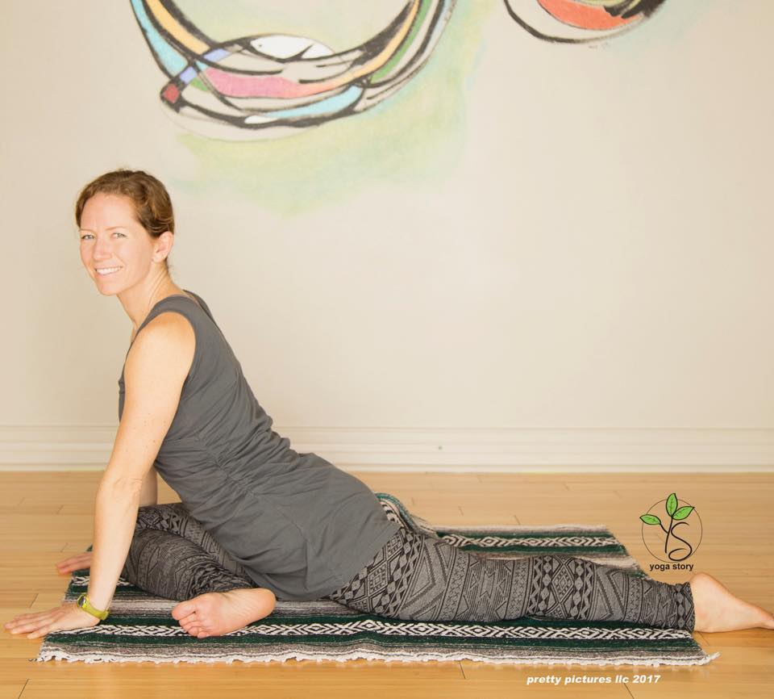
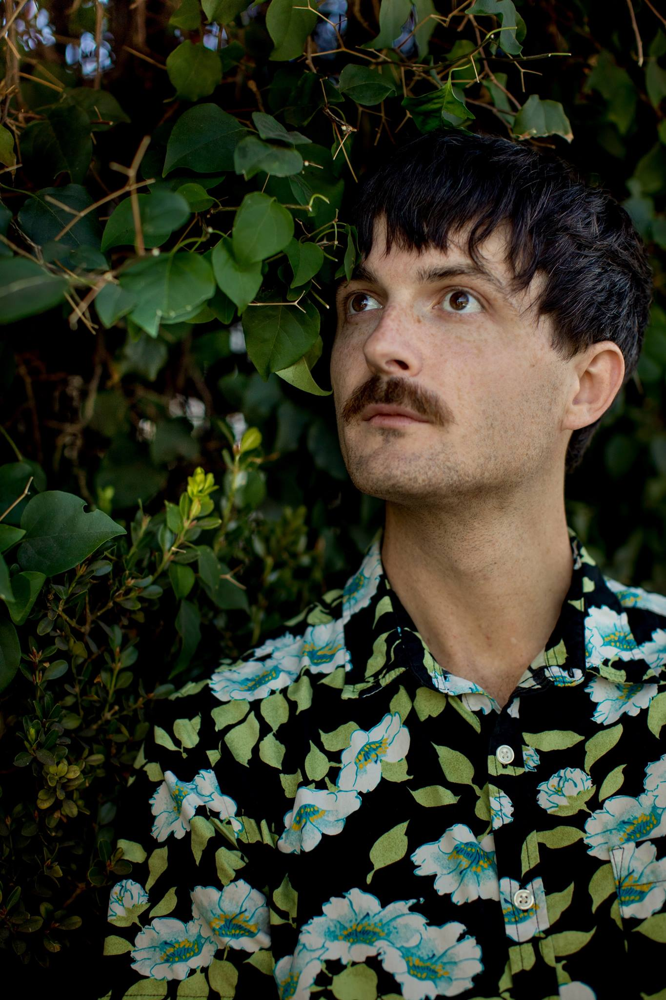
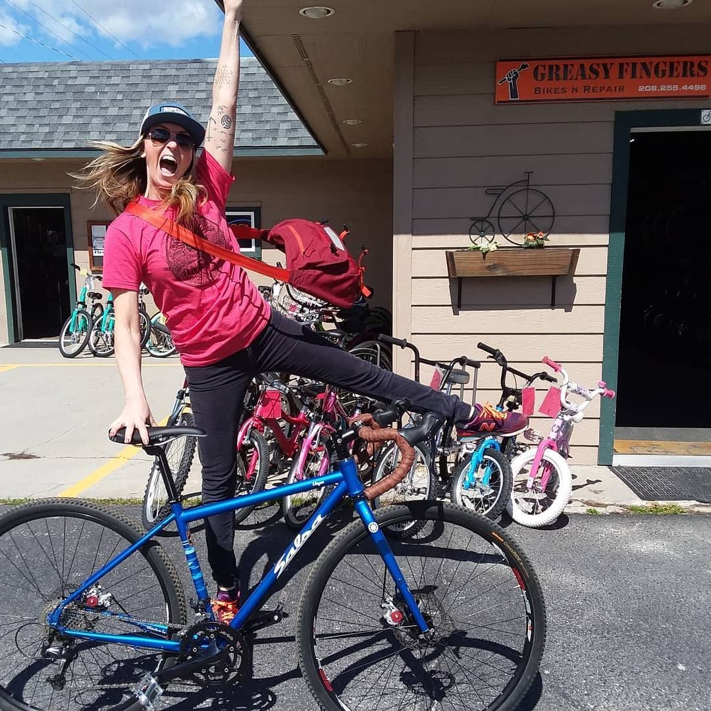
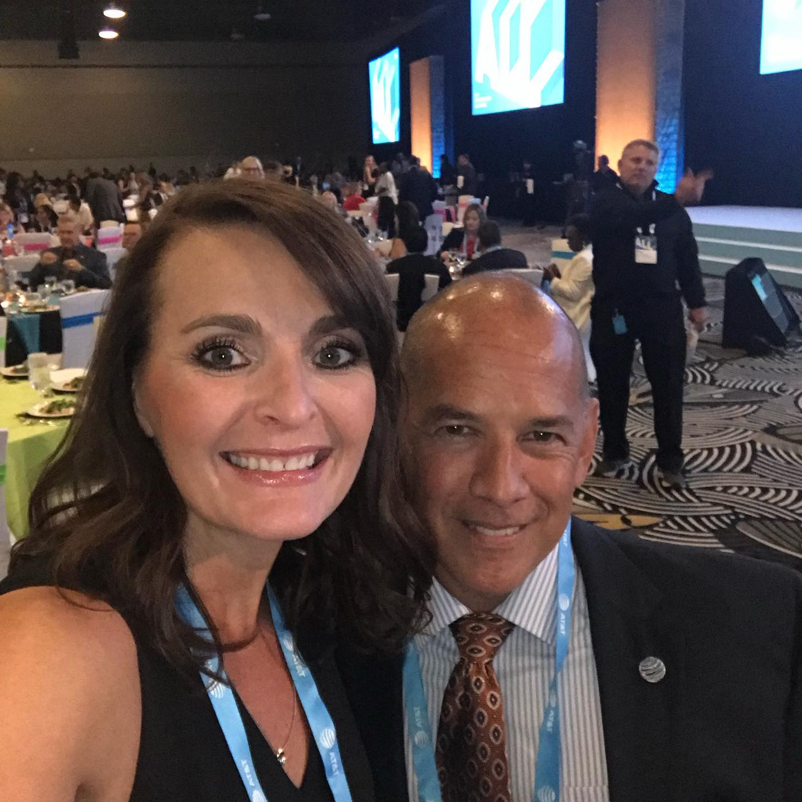

Chef/Owner
Whether you’re planning an extravagant dinner party, looking for a brunch to attend, or simply looking for new date night ideas, Cordell's Cuisine is here at your service. Check out the site for recipes, event recaps and much more, and get in touch today.

Chef/Owner
My name is Craig C. Cheatem; I am a classically trained Chef who uses culinary arts to create dishes that represent everything that I am and believe in.
Chef/Owner
Chef Justin Hartley is an Entrepreneur and Chef out of Los Angeles California

Chef/Owner
Come enjoy flavorful breakfast and lunch wraps, sandwiches, quiche, Baker's choice soup & pastry of the day, unique daily specials and more!
Butter Cream Home Bakery
Devoted baker + ambitious cake designer
Home bakery located in Sandpoint, ID
No store front, custom order only

Health Advocate
Property Managment
Registered Dietitian at Simplified Nutrition LLC
Helping you create sustainable eating habits that fit your lifestyle. No fad diets, quick fixes or gimmicks. Just simple and real nutrition.
Web Developer
Hi My name is Alex, I'm a frontend developer at restaurantpickupapp.com and I help our clients with the onboarding process.

Writer/tietastesnyc.com
I founded Tie Tastes New York City not only to share my experiences in this special place, but to also give others the courage to follow their dreams and savor every single moment.

Intentional Design
Transform your heart, mind, and home with intentional design. Have you ever walked into a space and instantly felt more calm? Centered? Alert? That's not by accident; it's by design. Let me help you get intentional.

Self Love Coach and Motivational Speaker
I help women find courage and meaning in their life by lifting their self-esteem and transforming their mindset, so they can move past anxiety and self loathing to achieve their highest potential in this life.

Comedian

Barber/Owner
I'm a certified barber with decades experience in hair.
Musician / Producer

Web Developer
I'm a web developer focused on fulfilling each clients vision with high-quality Profiles and applications.

Director of Operations
Diversity & Inclusion Communications Professional, Certified Recognition Professional and Certified Facilitator of the Appreciation At Work training process. Highly motivated and dedicated to growing professionally and personally. Passionate for the Diversity & Inclusion, communications and HR industry. .
{kind=link}
{kind=link}
{kind=link}
{kind=link}
{kind=link}
{kind=link}
{kind=link}
{kind=link}
{kind=link}
{kind=link}
{kind=link}
{kind=link}
{kind=link}
{kind=link}
{kind=link}